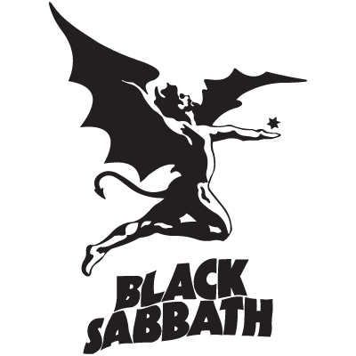

Black Sabbath
Black Sabbath were an English rock band formed in Birmingham in 1968 by guitarist Tony Iommi, drummer Bill Ward, bassist Geezer Butler and vocalist Ozzy Osbourne. They are often cited as pioneers of heavy metal music.[1] The band helped define the genre with releases such as Black Sabbath (1970), Paranoid (1970), and Master of Reality (1971). The band had multiple line-up changes following Osbourne's departure in 1979, with Iommi being the only constant member throughout its history.
After previous iterations of the group called the Polka Tulk Blues Band and Earth, the band settled on the name Black Sabbath in 1969. They distinguished themselves through occult themes with horror-inspired lyrics and tuned-down guitars. Signing to Philips Records in November 1969, they released their first single, "Evil Woman" in January 1970. Their debut album, Black Sabbath, was released the following month. Though it received a negative critical response, the album was a commercial success, leading to a follow-up record, Paranoid, later in 1970. The band's popularity grew, and by 1973's Sabbath Bloody Sabbath, critics were starting to respond favourably. Osbourne's regular use of drugs and alcohol led to his firing in 1979.
He was replaced by former Rainbow vocalist Ronnie James Dio. Following two albums with Dio, Black Sabbath endured many personnel changes in the 1980s and 1990s that included vocalists Ian Gillan, Glenn Hughes, Ray Gillen and Tony Martin, as well as several drummers and bassists. In 1991, Iommi and Butler rejoined Dio and drummer Vinny Appice to record Dehumanizer (1992). The original line-up reunited with Osbourne in 1997 and released a live album Reunion. Black Sabbath's final studio album and nineteenth overall, 13 (2013), features all of the original members except Ward. During their farewell tour, the band played their final concert in their home city of Birmingham on 4 February 2017.[2][3]
Black Sabbath were ranked by MTV as the "Greatest Metal Band" of all time, and placed second in VH1's "100 Greatest Artists of Hard Rock" list. Rolling Stone magazine ranked them number 85 on their "100 Greatest Artists of All Time". They have sold over 70 million records worldwide. Black Sabbath were inducted into the UK Music Hall of Fame in 2005 and the Rock and Roll Hall of Fame in 2006. They have also won two Grammy Awards for Best Metal Performance, and in 2019 the band were presented a Grammy Lifetime Achievement Award.[4]